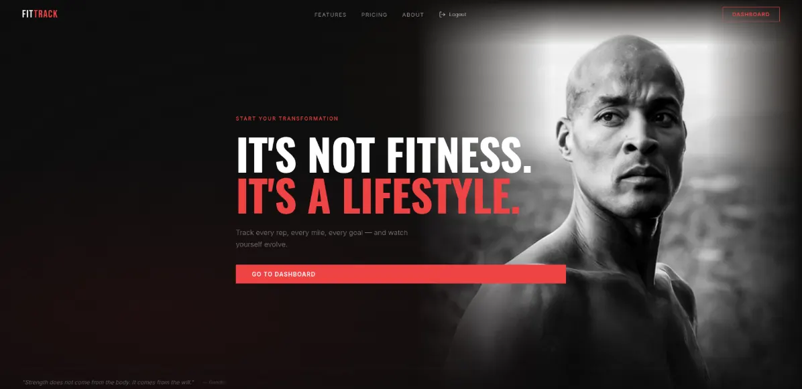
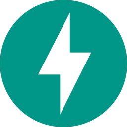
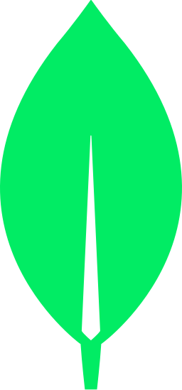
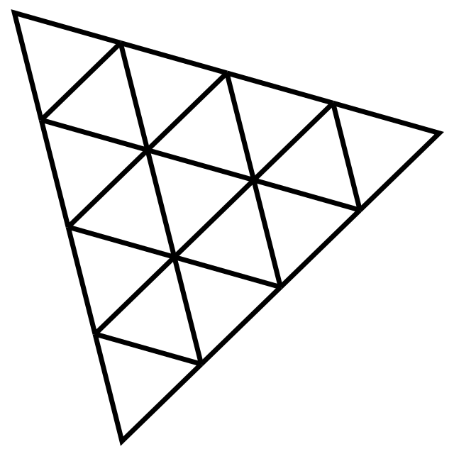
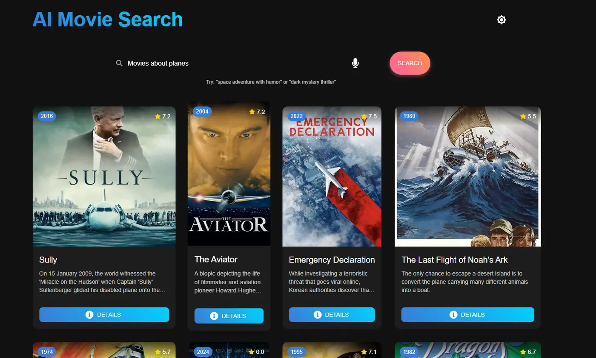
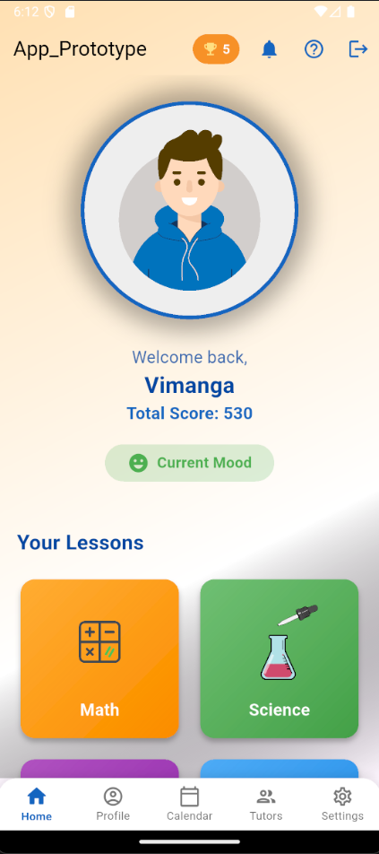

01 · WinHacks finalist
Health technology
FitTrack
A recovery assistant that turns biometrics, nutrition and activity signals into practical daily guidance.
hello, I’m Vimanga
Software engineer and AI researcher in Windsor, Canada. Whatever you need to know about my work, start here.
One way of working
Everything I make follows the same loop, whether it’s a hackathon product, a thesis, or a lab for a hundred students.
what would actually help here?
the system can be hard, the screen can’t
evidence beats certainty
repeat until it’s useful
tools I keep reaching for
 Python
Python OpenAI
OpenAI
FastAPI
MongoDB Firebase
Firebase Google Cloud
Google Cloud Git
Git
Three.js JavaScript
JavaScript Java
Java01 / Selected work
Four systems across health, geospatial intelligence, language and learning.

A recovery assistant that turns biometrics, nutrition and activity signals into practical daily guidance.
Satellite imagery, forecasts, statistical scoring and language models combined in one location-aware recommender.

A more human way to find films, powered by semantic search, Hugging Face and TMDB.

A mobile tutor that adapts pedagogy, compute placement and avatar fidelity in real time.
02 / Research
Research across adaptive learning, graph neural networks, health AI and language technology.
Density-based augmentation can strengthen natural clusters, but may erase useful sparse signals. Gains of up to 4% on movie-profit prediction and very different outcomes on benchmark networks.
↗A character-level Transformer combining unsupervised morpheme segmentation, relative positional encoding and translation cues.
↗A Deep Q-Network controller jointly selects pedagogical actions, compute placement and avatar fidelity. 44% relative improvement in normalized learning gain; 98.68% of steps under 500 ms.
↗From logistic regression to TabNet: which models most reliably detect heart-disease indicators, and how systematic tuning changes the answer.
↗03 / About
From a whiteboard to production, I care about making hard systems feel clear.
Curiosity starts the work. Usefulness keeps it going.
04 / Experience
From university classrooms and research labs to production infrastructure and operational systems.
University of Windsor · Canada
Supporting 100+ Computer Networks students through labs, assessments and office hours. Teaching routing, TCP/IP, Wireshark, Cisco Packet Tracer and network security.
Etezazi Industries · USA
Migrated 100+ users to a new domain with zero downtime. Managed identity, VPN, firewall, server and database infrastructure. Built a Python inventory workflow that reduced scrap parts by 40%.
Etezazi Industries · USA
Resolved 200+ IT requests through centralized monitoring. Supported operational databases and wrote SQL reporting queries.
University of Windsor · Specialization in Artificial Intelligence
Top 15% of program · Thesis on adaptive mobile intelligent tutoring systemsWichita State University · Wichita, Kansas
The technical foundation behind my work in software and intelligent systemsWinHacks finalist
NASA Space Apps
Four selected papers
M.Sc. Computer Science
Top 15% of the program
100+ students supported
More coming in 2027
Not a roadmap. Just the next few things I’m looking forward to, in roughly the right order.
M.Sc. Computer Science, University of Windsor.
Turning simulations into a paper.
Slower than the last one, probably.
Currently somewhere near Tau Ceti.
Hybrid POMDP for mobile tutoring.
You’re looking at it.
05 / Contact
I’m interested in software engineering, applied AI, research, and teams building ambitious things with real utility.
Prefer email? vimangau@gmail.com ↗